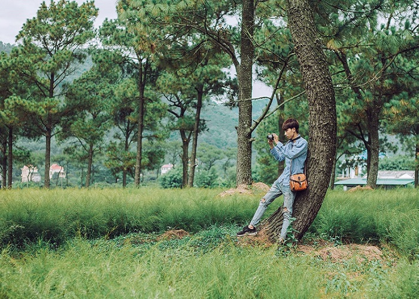
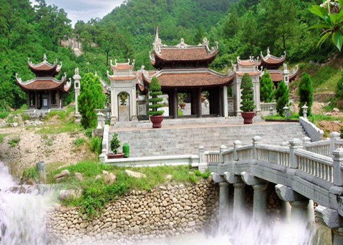

Hồ Bạch Đằng
Giữa một tiết trời oi bức như hiện nay, thả mình xuống dòng nước mát lành sẽ là điều tuyệt vời nhất.
Nếu bạn đang có ý định du lịch Hải Dương trong mùa hè này thì đừng bỏ qua Hồ Bạch Đằng – một trong những
điểm du lịch nổi tiếng ở Hải Dương.
Chi
Tiết

Cánh Đồng Hoa rễ
Thêm một điểm đi nổi tiếng ở Hải Dương mà bạn nên ghé thăm khi đến Hải Dương chính là đến với cánh đồng
hoa rễ.
Đứng giữa cánh đồng bạt ngàn hoa rễ nở rộ, bạn sẽ phải “lịm tim” đầy ngỡ ngàng và ngạc nhiên trước cảnh
đẹp nơi đây.
Chi Tiết
Cánh Đồng Cà Rốt
Cùng với cánh đồng hoa rễ, cánh đồng cà rốt cũng là gợi ý đầy thú vị cho bạn trong hành trình khám phá
một Hải Dương trọn vẹn.
Nằm ở huyện Cẩm Giàng, cách Hà Nội không xa, địa điểm nổi tiếng ở Hải Dương này sẽ là nơi hẹn hò tuyệt
vời cho những đôi
yêu nhau hay những ai muốn lưu giữ tuổi thanh xuân tươi đẹp của mình.
Chi Tiết

Côn Sơn
Đến Hải Dương, chắc chắn không thể bỏ qua danh thắng Côn Sơn –
đây là một trong ba trung tâm lớn của thiền phái Trúc Lâm được xây dựng vào thời nhà Trần,
cũng là nơi gắn liền với cuộc đời của rất nhiều danh nhân nổi tiếng trong lịch sử dân tộc ta.
Chi Tiết